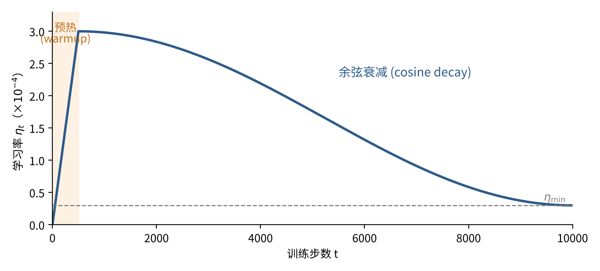
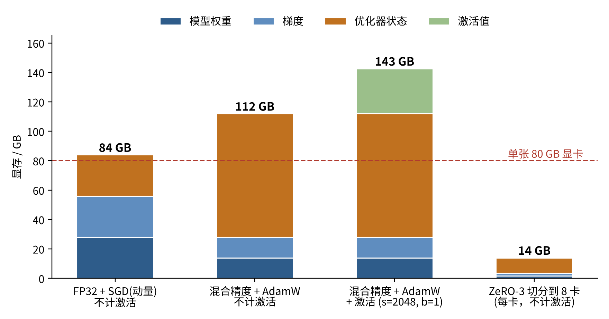
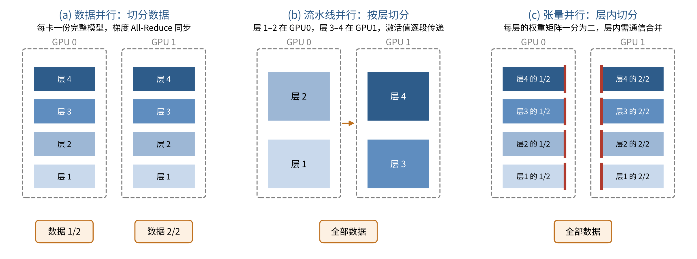
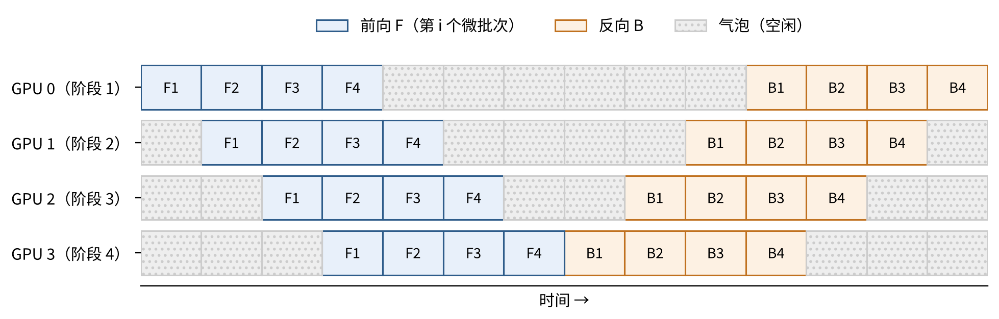
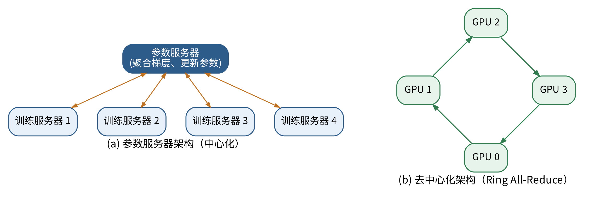

3.4 预训练算法与大规模训练
有了数据，下一步就是在数据上训练模型。本节先回顾预训练所用的模型结构，再介绍训练的基本流程、优化器和混合精度等核心算法，然后定量分析训练所需的算力和显存，最后讨论为什么必须进行分布式训练，以及分布式训练的主要技术。关于 GPU、高速互联和加速芯片等硬件的细节，将在第四章专门介绍，本节只讨论理解训练过程所必需的部分。
3.4.1 模型结构回顾与参数量估算
当前主流大模型都基于 Transformer 结构。按照使用 Transformer 的方式，大模型可以分为三类：仅编码器结构（如 BERT），适合理解类任务；编码器—解码器结构（如 T5），适合翻译、摘要等序列到序列任务；仅解码器结构（如 GPT、LLaMA、Qwen），适合生成任务，也是当前大语言模型的绝对主流。
一个解码器层主要由以下组件构成（详见第二章）：
- 多头自注意力：让每个位置同时从多个”视角”关注上下文中的其他位置，捕捉多样化的依赖关系；
- 前馈网络：对每个位置独立进行非线性变换，常用 GELU、SwiGLU 等激活函数；
- 位置编码：告诉模型每个 Token 在序列中的位置，当前主流采用旋转位置编码（RoPE）；
- 层归一化：用该层激活值的均值和方差（或均方根）进行归一化，稳定训练。主流模型采用”前置归一化”（Pre-Norm），并常用更简洁的 RMSNorm；
- 残差连接：把每个子层的输入直接加到输出上，使深层网络易于训练。
对于隐藏层维度为 \(h\) 的标准 Transformer 层，注意力部分的 \(Q\)、\(K\)、\(V\) 和输出投影四个矩阵各有 \(h^{2}\) 个参数，前馈网络的两个矩阵（中间维度为 \(4h\)）共有 \(8h^{2}\) 个参数，因此每层约有 \(12h^{2}\) 个参数。若模型有 \(L\) 层、词表大小为 \(V\)，则总参数量约为
\(N \approx 12Lh^{2} + 2Vh\quad\) (3-9)
其中 \(2Vh\) 是输入嵌入层和输出层的参数（若二者共享权重则为 \(Vh\)）。以 LLaMA-7B 为例，\(L = 32\)，\(h = 4096\)，\(V = 32000\)，代入得 \(12 \times 32 \times 4096^{2} \approx 6.44 \times 10^{9}\)，再加上嵌入层和输出层的约 \(0.26 \times 10^{9}\)，共约 67 亿参数，与官方公布的 6.7B 一致。（LLaMA 的前馈网络使用 SwiGLU，有三个矩阵，但其中间维度取约 \(\frac{8}{3}h\)，参数量与标准结构基本相同。）
3.4.2 训练的基本流程
无论模型多大，预训练的基本流程都可以概括为图 3-5 所示的循环。
图3-5 神经网络训练的基本循环
- 取一个批次的数据：从训练集中取出 \(B\) 条长度为 \(S\) 的 Token 序列；
- 前向传播：将 Token 输入模型，逐层计算，得到每个位置上下一个 Token 的概率分布；
- 计算损失：按式（3-2）计算预测分布与真实下一个 Token 之间的交叉熵损失；
- 反向传播：利用链式法则，从输出层向输入层逐层计算损失对每个参数的梯度 \(\nabla_{\theta}\mathcal{L}\)；
- 参数更新：优化器根据梯度更新参数，然后进入下一个训练步。
这里有几个基本概念需要明确：
- 训练步（Step）：完成一次上述循环，即一次参数更新；
- 批量大小（Batch Size）：每一步使用的样本数。大模型常以 Token 计量批量大小，例如 LLaMA 每步约使用 400 万个 Token；
- 轮次（Epoch）：把整个训练集完整过一遍。与传统深度学习动辄训练几十个轮次不同，大模型预训练通常只把大部分数据过一遍左右，高质量数据可能重复两三遍；
- 学习率（Learning Rate）：控制每一步参数更新的幅度，是最重要的超参数之一；
- 梯度（Gradient）：损失函数对参数的偏导数，指明了让损失上升最快的方向，参数应当沿其反方向调整。
3.4.3 优化器与学习率调度
优化器根据梯度决定参数如何更新。 不同的优化器在收敛速度、稳定性和显存开销上各不相同。
1．随机梯度下降（SGD）
最基本的优化器是随机梯度下降。设第 \(t\) 步的梯度为 \(\mathbf{g}_{t} = \nabla_{\theta}\mathcal{L}\left( \theta_{t} \right)\)，学习率为 \(\eta\)，则
\(\theta_{t + 1} = \theta_{t} - \eta\,\mathbf{g}_{t}\quad\) (3-10)
SGD 不需要保存任何额外状态，但更新方向受单个批次的噪声影响大。带动量的 SGD 维护一个梯度的指数移动平均 \(\mathbf{m}_{t}\)，使更新方向更平滑，代价是每个参数要多保存一个状态值。
2．Adam 与 AdamW
Adam 优化器同时维护梯度的一阶矩（均值）\(\mathbf{m}_{t}\) 和二阶矩（未中心化的方差）\(\mathbf{v}_{t}\)，从而为每个参数自适应地调整步长：
\(\mathbf{m}_{t} = \beta_{1}\mathbf{m}_{t - 1} + \left( 1 - \beta_{1} \right)\mathbf{g}_{t},\quad\quad\mathbf{v}_{t} = \beta_{2}\mathbf{v}_{t - 1} + \left( 1 - \beta_{2} \right)\mathbf{g}_{t}^{2}\quad\) (3-11)
\({\widehat{\mathbf{m}}}_{t} = \frac{\mathbf{m}_{t}}{1 - \beta_{1}^{t}},\quad\quad{\widehat{\mathbf{v}}}_{t} = \frac{\mathbf{v}_{t}}{1 - \beta_{2}^{t}}\quad\) (3-12)
式（3-12）是偏差修正，用于抵消训练初期 \(\mathbf{m}_{t}\)、\(\mathbf{v}_{t}\) 因初始化为 0 而偏小的问题。AdamW 在此基础上把权重衰减（一种防止参数过大的正则化手段）从梯度中解耦出来，直接作用于参数：
\(\theta_{t + 1} = \theta_{t} - \eta\left( \frac{{\widehat{\mathbf{m}}}_{t}}{\sqrt{{\widehat{\mathbf{v}}}_{t}} + \epsilon} + \lambda\,\theta_{t} \right)\quad\) (3-13)
其中 \(\lambda\) 为权重衰减系数，\(\epsilon\) 是防止除零的小常数。AdamW 收敛快、对超参数不敏感，是目前大模型训练事实上的标准优化器。例如，LLaMA 的训练采用 \(\beta_{1} = 0.9\)、\(\beta_{2} = 0.95\)、\(\lambda = 0.1\)。需要特别注意的是，AdamW 要为每个参数额外保存 \(\mathbf{m}\) 和 \(\mathbf{v}\) 两个状态，这是训练显存开销的主要来源之一（见 3.4.6 节）。
3．学习率调度
大模型训练很少使用固定的学习率，最常见的策略是”线性预热 + 余弦衰减”（图 3-6）：训练开始的 \(T_{w}\) 步内，学习率从 0 线性增长到最大值 \(\eta_{\max}\)，避免随机初始化的模型被过大的更新”冲垮”；此后学习率按余弦曲线逐渐降低到最小值 \(\eta_{\min}\)，让模型在训练后期精细收敛：
\(\eta_{t} = \left\{ \begin{matrix} \eta_{\max} \cdot \frac{t}{T_{w}}, & t < T_{w} \\ \eta_{\min} + \frac{1}{2}\left( \eta_{\max} - \eta_{\min} \right)\left\lbrack 1 + \cos\left( \pi \cdot \frac{t - T_{w}}{T - T_{w}} \right) \right\rbrack, & T_{w} \leq t \leq T \end{matrix} \right.\ \quad\) (3-14)
其中 \(T\) 为总训练步数。LLaMA 使用 2000 步预热，并把学习率最终衰减到最大值的 10%。

图3-6 线性预热与余弦衰减的学习率调度
4．梯度裁剪
训练过程中偶尔会出现梯度突然变得极大的情况，导致参数被剧烈更新、损失突然飙升（Loss Spike）。梯度裁剪在梯度的 L2 范数超过阈值 \(c\) 时按比例缩小梯度：
\(\mathbf{g} \leftarrow \mathbf{g} \cdot \min\left( 1,\ \frac{c}{\parallel \mathbf{g} \parallel_{2}} \right)\quad\) (3-15)
大模型训练中通常取 \(c = 1.0\)。
3.4.4 混合精度训练
计算机中的浮点数由符号位、指数位和尾数位组成。指数位决定能表示的数值范围，尾数位决定精度。表 3-5 比较了大模型训练中常用的几种浮点格式。
表3-5 大模型训练常用的浮点数格式
| 格式 | 总位数 | 符号 / 指数 / 尾数 | 每个数占用 | 最大可表示值 | 特点 |
|---|---|---|---|---|---|
| FP32 | 32 | 1 / 8 / 23 | 4 字节 | 约 \(3.4 \times 10^{38}\) | 精度高，计算慢、占用大 |
| FP16 | 16 | 1 / 5 / 10 | 2 字节 | 65504 | 范围小，梯度容易下溢或上溢 |
| BF16 | 16 | 1 / 8 / 7 | 2 字节 | 约 \(3.4 \times 10^{38}\) | 与 FP32 范围相同、精度较低，训练稳定 |
| FP8（E4M3） | 8 | 1 / 4 / 3 | 1 字节 | 448 | 新一代硬件支持，需精细的缩放策略 |
全部使用 FP32 训练最为稳妥，但速度慢、显存占用大；而现代 GPU 的张量核心在 16 位精度下的计算吞吐量通常是 FP32 的数倍乃至十余倍。混合精度训练（Mixed Precision Training）兼顾了二者：
- 保存一份 FP32 的”主权重”（Master Weights）；
- 每一步把主权重转换为 FP16 或 BF16，用低精度完成前向传播和反向传播，得到低精度的梯度；
- 把梯度转换回 FP32，由优化器更新 FP32 主权重。
这样，计算量最大的矩阵乘法都在低精度下进行，速度显著提高；而参数更新在 FP32 下进行，避免了许多微小的更新量在低精度下被舍入为零。
使用 FP16 时，由于它的表示范围很小，很多梯度值会下溢为 0，因此需要损失缩放（Loss Scaling）：先把损失乘以一个较大的系数 \(s\) 再反向传播，使梯度落入 FP16 可表示的范围，更新参数前再除以 \(s\)。BF16 与 FP32 的指数位相同，数值范围一样大，基本不需要损失缩放，因此成为当前大模型训练的首选格式。近年来，DeepSeek-V3 等模型进一步在大规模训练中使用了 FP8 混合精度，以更低的精度换取更高的效率。
3.4.5 算力需求估算
1．训练计算量：\(C \approx 6ND\)
训练一个大模型需要多少计算量？一个简洁而实用的估算公式是
\(C \approx 6ND\quad\) (3-16)
其中 \(C\) 为训练总浮点运算次数（FLOPs），\(N\) 为模型参数量，\(D\) 为训练 Token 数。系数 6 的来源是：前向传播时，每个参数对每个 Token 大约参与一次乘法和一次加法，即 \(2N\) 次运算；反向传播需要分别计算对激活值和对参数的梯度，计算量约为前向的 2 倍，即 \(4N\)；合计每个 Token 约 \(6N\) 次运算。该公式忽略了注意力计算中与序列长度相关的部分，在序列长度远小于模型维度的若干倍时误差不大。
以 GPT-3 为例，\(N = 1.75 \times 10^{11}\)，\(D = 3 \times 10^{11}\)，则
\[C \approx 6 \times 1.75 \times 10^{11} \times 3 \times 10^{11} \approx 3.15 \times 10^{23}\ \text{FLOPs}\]
这与 OpenAI 公布的约 \(3.14 \times 10^{23}\) FLOPs 基本一致。
2．训练时间估算
已知计算量后，训练时间可以按下式估算：
\(\text{训练时间} \approx \frac{C}{n_{GPU} \times F_{peak} \times MFU}\quad\) (3-17)
其中 \(n_{GPU}\) 为 GPU 数量，\(F_{peak}\) 为单卡在所用精度下的理论峰值算力，MFU（Model FLOPs Utilization，模型算力利用率）是实际有效算力占理论峰值的比例。由于通信、访存和调度等开销，大规模训练的 MFU 通常只有 30%～60%。
【例 3-1】 LLaMA-7B 的参数量约为 \(6.7 \times 10^{9}\)，训练数据为 \(1.0 \times 10^{12}\) 个 Token，使用 NVIDIA A100-80GB GPU 训练（BF16 稠密计算峰值为 312 TFLOPS）。论文报告的训练消耗为 82,432 GPU 小时。试估算训练期间的 MFU。
解： 训练计算量为
\[C \approx 6 \times 6.7 \times 10^{9} \times 1.0 \times 10^{12} \approx 4.0 \times 10^{22}\ \text{FLOPs}\]
82,432 GPU 小时折合 \(82432 \times 3600 \approx 2.97 \times 10^{8}\) GPU 秒，因此单卡实际有效算力约为
\[\frac{4.0 \times 10^{22}}{2.97 \times 10^{8}} \approx 1.35 \times 10^{14}\ \text{FLOP/s} = 135\ \text{TFLOPS}\]
\(MFU \approx 135/312 \approx 43\%\)。同样的方法可以用于 LLaMA-65B：\(6 \times 6.5 \times 10^{10} \times 1.4 \times 10^{12} \approx 5.5 \times 10^{23}\) FLOPs，论文报告约 102 万 GPU 小时；在 2048 张 A100 上训练，约需 \(1.02 \times 10^{6}/2048 \approx 500\) 小时，即约 21 天，与论文所述一致。
从这个例子可以直观地感受到预训练的规模：即使是”只有”70 亿参数的模型，用单张 A100 训练也需要约 9 年；650 亿参数的模型即使动用 2048 张 A100，也要连续训练三周。又如，1760 亿参数的多语言模型 BLOOM 使用了 48 个计算节点、每节点 8 张 A100-80GB，共训练了约 3.5 个月。单个计算设备完全不足以支撑大模型训练，必须采用分布式训练。
3.4.6 显存需求估算
算力决定了训练”要多久”，显存则决定了训练”能不能进行”。训练时，显存主要被以下四部分占用：
\(M_{\text{训练}} = M_{\text{权重}} + M_{\text{梯度}} + M_{\text{优化器状态}} + M_{\text{激活值}}\quad\) (3-18)
设模型参数量为 \(\Psi\)，前三项只与参数量和所用精度、优化器有关，统称为模型状态；激活值则与批量大小、序列长度有关。
1．模型状态
表 3-6 列出了不同训练配置下，每个参数需要占用的字节数。
表3-6 不同训练配置下每个参数的显存占用（单位：字节）
| 训练配置 | 权重 | 梯度 | 优化器状态 | 合计 | 7B 模型 |
|---|---|---|---|---|---|
| FP32 + SGD（无动量） | 4 | 4 | 0 | 8 | 56 GB |
| FP32 + SGD（带动量） | 4 | 4 | 4（动量） | 12 | 84 GB |
| FP32 + AdamW | 4 | 4 | 8（\(\mathbf{m}\)、\(\mathbf{v}\)） | 16 | 112 GB |
| 混合精度 + AdamW | 2（FP16/BF16） | 2 | 12（FP32 主权重、\(\mathbf{m}\)、\(\mathbf{v}\)） | 16 | 112 GB |
可以看到，在最常用的”混合精度 + AdamW”配置下，每个参数需要约 16 字节的模型状态，其中优化器状态占了四分之三。混合精度训练并不会减少模型状态的总占用（FP32 主权重仍需保存），它节省的主要是激活值显存和计算时间。
2．激活值
前向传播过程中产生的中间结果（激活值）需要保存下来，供反向传播计算梯度时使用。激活值的大小与批量大小 \(b\)、序列长度 \(s\) 成正比。根据 Korthikanti 等人（2022）的分析，在 16 位精度、不使用并行切分时，一个 Transformer 层需要保存的激活值约为
\(M_{\text{激活}}^{\text{每层}} \approx s\, b\, h\left( 34 + \frac{5\, a\, s}{h} \right)\ \text{字节}\quad\) (3-19)
其中 \(a\) 为注意力头数。括号中的第二项来自注意力分数矩阵，随序列长度平方增长。
【例 3-2】 以混合精度 + AdamW 训练 LLaMA-7B（\(L = 32\)，\(h = 4096\)，\(a = 32\)），序列长度 \(s = 2048\)，批量大小 \(b = 1\)，估算所需显存。
解： 按表 3-6，模型状态约为每参数 16 字节，按 7B 参数计约 \(16 \times 7 = 112\ \text{GB}\)。由式（3-19），每层激活值约为
\[2048 \times 1 \times 4096 \times \left( 34 + \frac{5 \times 32 \times 2048}{4096} \right) = 8388608 \times 114 \approx 0.96\ \text{GB}\]
32 层合计约 30.6 GB。因此总显存约为 \(112 + 30.6 \approx 143\ \text{GB}\)，远超单张 80 GB 显卡的容量（图 3-7）。若批量大小增加到 8，激活值将增至约 245 GB。

图3-7 训练一个 7B 模型所需显存的构成
为了减少激活值显存，常用激活重计算（Activation Recomputation，也称梯度检查点）：前向传播时只保存每层的输入，反向传播时再重新做一次该层的前向计算来恢复所需的激活值。这样每层只需保存约 \(2sbh\) 字节（上例中 32 层合计约 0.5 GB），代价是增加约一次前向传播的计算量（总计算量增加约 1/3）。
【易错点】 估算训练显存时常见三种错误：一是把 AdamW 的优化器状态算成”一倍”或”三倍”模型大小，正确的是 \(\mathbf{m}\)、\(\mathbf{v}\) 两个状态（FP32 下为 8 字节/参数，混合精度下若计入 FP32 主权重则为 12 字节/参数）；二是认为”激活值可以忽略”，实际上在长序列、大批量时它可能超过模型状态本身；三是认为混合精度能把模型状态减半，实际上并不能。一个实用的经验法则是：用混合精度 + AdamW 全量训练，模型状态约为”参数量（以 B 计）× 16 GB”。
3.4.7 分布式训练面临的挑战
以上分析表明，一个 7B 模型的训练已经放不进单张显卡；而对于千亿参数的模型，问题会严重得多。大模型训练面临的挑战通常被概括为”四堵墙”：
- 内存墙：单卡显存远远装不下模型状态和激活值。例如，2000 亿参数的模型在不做任何显存优化时，仅模型状态就需要 \(2 \times 10^{11} \times 16\ \text{B} = 3200\ \text{GB}\)，加上激活值超过 3500 GB，相当于数十张 80 GB 显卡的总显存。
- 性能墙：即使显存够用，单卡算力也远远不够（见例 3-1）。这要求 AI 芯片本身足够强大，同时训练的调度效率和各种并行优化手段要足够好。
- 通信墙：把计算分摊到多张卡上之后，卡与卡之间需要频繁交换梯度、参数和激活值。通信量取决于参数量、计算类型、数据量、集群的带宽拓扑和通信策略等多种因素，设计不当时，GPU 大部分时间都在等待通信。
- 调优墙：在数千个节点的集群上，同时保证计算的正确性、性能和可用性极其困难：任何一张卡故障都可能导致训练中断，手工设计的分布式方案也难以兼顾各方面。
分布式训练正是为突破这些障碍而生：它把模型训练任务分解为多个子任务，分配到多个计算设备上并行执行。按照切分对象的不同，主要有数据并行、模型并行（包括流水线并行和张量并行）以及将它们组合起来的混合并行，三种基本方式如图 3-8 所示。

图3-8 三种基本的并行方式
3.4.8 数据并行
1．基本过程
数据并行（Data Parallelism）把训练数据切分到多个设备上，每个设备保存一份完整的模型副本。一个训练步的过程如下：
- 把当前批次的数据平均分成 \(N_{d}\) 份，每个设备分得一份；
- 每个设备用自己的数据独立完成前向传播和反向传播，得到本地梯度 \(\mathbf{g}^{(i)}\)；
- 所有设备通过通信对梯度求平均：
\(\mathbf{g} = \frac{1}{N_{d}}\sum_{i = 1}^{N_{d}}\mathbf{g}^{(i)}\quad\) (3-20)
- 每个设备用相同的平均梯度更新自己的模型副本，各副本因此始终保持一致。
数据并行实现简单、扩展性好，是加快训练最直接的方法。在”去中心化”架构下，步骤 3 通常通过 Ring All-Reduce 完成：\(N_{d}\) 个设备首尾相连成环，梯度被切成 \(N_{d}\) 块，沿环依次传递和累加。可以证明，每个设备需要发送（和接收）的数据量约为
\(2 \cdot \frac{N_{d} - 1}{N_{d}} \cdot M_{\text{梯度}}\quad\) (3-21)
当 \(N_{d}\) 较大时约为梯度大小的 2 倍，几乎与设备数量无关，这正是 Ring All-Reduce 扩展性好的原因。例如，7B 模型的 BF16 梯度约 14 GB，则每一步每张卡要收发约 28 GB 数据，这对设备间的互联带宽提出了很高要求。
2．ZeRO：消除数据并行中的冗余
普通数据并行的显存问题在于：每个设备都保存了一份完整的模型状态。8 张卡做数据并行，就有 8 份完全相同的优化器状态、梯度和参数，这是巨大的浪费，而且并不能解决单卡放不下模型的问题。
微软 DeepSpeed 提出的 ZeRO（Zero Redundancy Optimizer）的思路是：既然每个设备只需要在用到的时候拿到完整数据，那么平时就让每个设备只保存模型状态的 \(1/N_{d}\)。ZeRO 分为三个阶段，依次切分优化器状态（\(P_{os}\)）、梯度（\(P_{g}\)）和参数（\(P_{p}\)）。在混合精度 + Adam 训练下，每个设备的模型状态显存如表 3-7 所示（\(K = 12\) 为优化器状态的字节数）。
表3-7 ZeRO 各阶段每个设备的模型状态显存
| 方案 | 每卡显存 | 7B 模型、8 卡 | 7.5B 模型、64 卡（ZeRO 论文示例） |
|---|---|---|---|
| 普通数据并行 | \((2 + 2 + K)\Psi\) | 112 GB | 120 GB |
| ZeRO-1（切分优化器状态） | \(4\Psi + \frac{K\Psi}{N_{d}}\) | 38.5 GB | 31.4 GB |
| ZeRO-2（再切分梯度） | \(2\Psi + \frac{(2 + K)\Psi}{N_{d}}\) | 26.25 GB | 16.6 GB |
| ZeRO-3（再切分参数） | \(\frac{(2 + 2 + K)\Psi}{N_{d}}\) | 14 GB | 1.9 GB |
ZeRO-1 和 ZeRO-2 的通信量与普通数据并行相同，却能大幅降低显存；ZeRO-3 需要在每一层计算前临时收集该层的完整参数，通信量增加约 50%，但每卡显存随设备数线性下降。PyTorch 中的完全分片数据并行（Fully Sharded Data Parallel，FSDP）实现了与 ZeRO-3 相同的思想。ZeRO 还可以进一步把优化器状态卸载到 CPU 内存（ZeRO-Offload），以在显卡数量较少时训练更大的模型。
3.4.9 模型并行
当单个模型（或模型的某一层）大到无法放入一个设备时，就需要模型并行（Model Parallelism）：把模型的不同部分分布到多个设备上，而不是像数据并行那样在每个设备上保存完整副本。前向传播时，数据依次流过各设备上的模型部分，并在设备间传输；反向传播时，梯度沿相反方向跨设备传播，每个设备只计算并更新自己负责的那部分参数。按照切分方式的不同，模型并行分为流水线并行和张量并行两类。
1．流水线并行
流水线并行（Pipeline Parallelism）按层切分模型，把连续的若干层组成一个阶段（Stage），分配给一个设备。如果简单地让一批数据依次流过各阶段，那么在任意时刻只有一个设备在工作，其余设备都在等待。为此，流水线并行把一个批次进一步切分为 \(m\) 个微批次（Micro-batch），让不同阶段同时处理不同的微批次，就像工厂装配线上不同工位同时加工不同的产品。
图 3-9 展示了 \(p = 4\) 个阶段、\(m = 4\) 个微批次时的执行过程（GPipe 调度方式）。

图3-9 流水线并行的执行过程与”气泡”（p = 4，m = 4）
可以看到，流水线在”灌满”和”排空”时，总有部分设备处于空闲状态，这些空闲时间称为气泡（Bubble）。气泡占总时间的比例为
\(\text{气泡率} = \frac{p - 1}{m + p - 1}\quad\) (3-22)
图 3-9 中 \(p = m = 4\)，气泡率为 \(3/7 \approx 43\%\)。增大微批次数 \(m\) 可以降低气泡率，例如 \(m = 32\) 时气泡率降至约 \(3/35 \approx 8.6\%\)；但微批次越多，需要同时保存的激活值也越多。为此，PipeDream 等工作提出了”一次前向、一次反向”交替进行的 1F1B 调度，以减少激活值显存。流水线并行只需在相邻阶段之间传递激活值，通信量较小，适合跨服务器使用。
2．张量并行
张量并行（Tensor Parallelism）在层内切分，把一个大的权重矩阵拆分到多个设备上，每个设备只计算矩阵乘法的一部分。以 Megatron-LM 对前馈网络的切分为例，设前馈网络为 \(\mathbf{Z} = GeLU\left( \mathbf{X}\mathbf{A} \right)\,\mathbf{B}\)，在两个设备上：
- 把第一个矩阵按列切分为 \(\mathbf{A} = \left\lbrack \mathbf{A}_{1},\mathbf{A}_{2} \right\rbrack\)，两个设备分别计算 \(\mathbf{Y}_{i} = GeLU\left( \mathbf{X}\mathbf{A}_{i} \right)\)。由于 GeLU 逐元素作用，这一步不需要任何通信；
- 把第二个矩阵按行切分为 \(\mathbf{B} = \begin{bmatrix} \mathbf{B}_{1} \\ \mathbf{B}_{2} \end{bmatrix}\)，两个设备分别计算 \(\mathbf{Y}_{i}\mathbf{B}_{i}\)，最后通过一次 All-Reduce 求和：
\(\mathbf{Z} = \mathbf{Y}_{1}\mathbf{B}_{1} + \mathbf{Y}_{2}\mathbf{B}_{2}\quad\) (3-23)
注意力层则可以按注意力头切分，让每个设备负责一部分头。张量并行的优点是能把单层的计算和显存同时分摊开；缺点是每一层的前向和反向都需要通信，对带宽和延迟要求极高，因此通常只在同一台服务器内、通过 NVLink 等高速互联的 GPU 之间使用，并行度一般不超过 8。
3.4.10 混合并行
单一的并行方式各有局限：数据并行解决不了单卡放不下模型的问题，张量并行难以跨服务器扩展，流水线并行存在气泡。实际训练千亿级模型时，通常把它们组合起来使用，称为混合并行，其中最典型的是同时使用数据并行、张量并行和流水线并行的三维并行（3D Parallelism）。若数据并行度为 \(d\)、张量并行度为 \(t\)、流水线并行度为 \(p\)，则所需 GPU 总数为
\(n_{GPU} = d \times t \times p\quad\) (3-24)
常见的做法是：在服务器内部用张量并行，充分利用高速互联；在服务器之间用流水线并行，降低跨机通信量；在此基础上再复制多组，用数据并行提高吞吐量。例如，5300 亿参数的 Megatron-Turing NLG 使用了 8 路张量并行、35 路流水线并行和 8 路数据并行，共 2240 张 A100 GPU。表 3-8 对几种并行方式做了比较。
表3-8 几种并行方式的比较
| 并行方式 | 切分对象 | 主要解决的问题 | 通信内容与开销 | 典型使用范围 |
|---|---|---|---|---|
| 数据并行 | 训练数据 | 加快训练速度 | 每步 All-Reduce 梯度，开销中等 | 跨服务器、大规模 |
| ZeRO / FSDP | 数据 + 模型状态 | 数据并行的显存冗余 | 在数据并行基础上增加参数收集 | 跨服务器 |
| 流水线并行 | 模型的层 | 整个模型放不进单卡 | 相邻阶段传递激活值，开销小，但有气泡 | 跨服务器 |
| 张量并行 | 单层的权重矩阵 | 单层过大、单卡算不动 | 每层都要 All-Reduce，开销大 | 服务器内部 |
| 混合并行 | 以上多种组合 | 超大模型训练 | 综合权衡 | 千卡乃至万卡集群 |
除此之外，针对长序列训练还有沿序列维度切分的序列并行和上下文并行，针对混合专家（MoE）模型还有把不同专家分配到不同设备的专家并行，它们都可以与上述方法组合使用。
3.4.11 分布式训练系统
1．集群拓扑
大模型训练集群由大量带有加速设备的服务器组成。每台服务器通常装有 2～16 个（最常见为 8 个）加速设备，服务器内部的设备通过 NVLink 等高速总线互联；多台服务器放置在一个机柜（Rack）中，通过架顶交换机（Top of Rack Switch，ToR）连接到网络；当架顶交换机端口用满时，再通过上层的骨干交换机（Spine Switch）接入更多机柜。由此形成的拓扑结构通常是一个多层树（Multi-Level Tree），服务器之间常采用 InfiniBand 等基于 RDMA 的高速低延迟网络。这种层次结构意味着，服务器内部的通信带宽远高于服务器之间，这正是前面”张量并行放在服务器内、流水线和数据并行跨服务器”的原因。关于这些硬件的细节，将在第四章介绍。
2．参数服务器架构
早期的分布式训练系统多采用参数服务器（Parameter Server）架构（图 3-10(a)）。系统中有两种服务器：训练服务器负责前向和反向计算，需要大量计算资源；参数服务器负责保存全局参数、聚合梯度并更新参数，需要充足的内存和通信资源。按参数更新的时机，训练分为两种模式：
- 同步训练：参数服务器收到所有训练服务器的梯度后，统一聚合并更新参数，再把新参数分发下去。结果与单机训练等价，但整体速度受最慢的训练服务器拖累；
- 异步训练：参数服务器不再等待所有梯度，每收到一个训练服务器的梯度就直接更新参数。速度快，但部分训练服务器会基于过时的参数计算梯度（梯度陈旧问题），可能影响收敛。
参数服务器架构的主要问题是中心节点容易成为通信瓶颈：所有训练服务器都要与它交换数据，设备越多，它的负担越重。

图3-10 两种分布式训练系统架构
3．去中心化架构与集合通信
当前大模型训练主要采用去中心化架构（图 3-10(b)）：没有中央服务器，各节点之间直接通信和协调。节点可以并行地进行训练和通信，通信负载被均匀分摊，显著降低了通信开销，缓解了”通信墙”。节点之间周期性交换参数和梯度，通过集合通信（Collective Communication）实现。常用的通信原语如表 3-9 所示。
表3-9 常用的集合通信原语
| 原语 | 含义 | 在大模型训练中的典型用途 |
|---|---|---|
| Broadcast | 一个节点把数据发送给所有节点 | 训练开始时同步初始参数 |
| Scatter | 一个节点把数据切成多块，分别发给各节点 | 分发数据分片 |
| Gather | 所有节点把各自的数据汇集到一个节点 | 汇总评测结果 |
| Reduce | 所有节点的数据经求和等运算后汇集到一个节点 | 汇总损失值 |
| All-Reduce | 所有节点的数据经运算后，结果分发给所有节点 | 数据并行的梯度平均、张量并行的结果合并 |
| All-Gather | 每个节点都获得所有节点数据的拼接 | ZeRO-3 / FSDP 计算前收集完整参数 |
| Reduce-Scatter | 先求和，再把结果切块分发给各节点 | ZeRO-2/3 中聚合并切分梯度 |
| All-to-All | 每个节点向其他每个节点发送不同的数据 | MoE 模型中把 Token 分发给不同专家 |
值得一提的是，All-Reduce 可以分解为一次 Reduce-Scatter 加一次 All-Gather，Ring All-Reduce 正是这样实现的。NVIDIA 的 NCCL 库为 GPU 提供了这些原语的高效实现。
4．分布式训练框架
工程实践中，研发者通常借助成熟的框架完成分布式训练，而不是从零实现上述机制：
- PyTorch 原生提供了分布式数据并行（DDP）和完全分片数据并行（FSDP）；
- DeepSpeed（微软）实现了 ZeRO 系列优化、流水线并行和 CPU 卸载等功能；
- Megatron-LM（NVIDIA）提供了高效的张量并行、流水线并行和序列并行实现，常与 DeepSpeed 结合使用；
- Horovod（Uber）是面向 TensorFlow、Keras 和 PyTorch 的分布式训练框架，基于 Ring All-Reduce；
- TensorFlow 内置了分布式训练策略，Amazon SageMaker 等云平台也提供了支持数据并行和模型并行的分布式训练库。
3.4.12 训练的稳定性与容错
在数千张卡上连续训练数周，“训练能否顺利跑完”本身就是一个工程难题。常见的问题和对策包括：
- 损失尖峰与发散：训练中损失突然飙升，有时会自行恢复，有时会导致训练彻底发散。常用的对策包括梯度裁剪、降低学习率、跳过导致问题的数据批次，以及从较早的检查点回退后重新训练。
- 硬件故障：卡数越多，在训练期间遇到 GPU、网络或节点故障的概率越高。因此训练系统需要定期保存检查点（Checkpoint），包括模型参数、优化器状态和数据读取位置，以便故障后从最近的检查点恢复。Meta 公开的 OPT-175B 训练日志就记录了大量因硬件故障和损失发散而进行的人工重启。
- 监控与评估：在训练过程中持续监控损失、梯度范数、学习率和吞吐量等指标，并定期在下游基准上评估检查点，及时发现异常。
【本节小结】 预训练的核心算法并不复杂：前向传播、计算交叉熵损失、反向传播、用 AdamW 更新参数。真正的难度在于规模。用 \(C \approx 6ND\) 可以估算需要多少算力，用”每参数 16 字节 + 激活值”可以估算需要多少显存；当二者都远超单卡能力时，就需要数据并行、ZeRO、流水线并行和张量并行等分布式技术，把计算和显存分摊到成百上千张卡上，同时尽量降低通信开销和空闲时间。